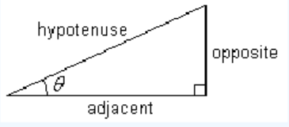

The longest side in a triangle is opposite the largest angle, and the shortest side is opposite the smallest angle
Triangle Inequality: In any triangle, the sum of the lengths of any two sides is greater than the length of the third side.
Pythagorean Theorem: In a right triangle with hypotenuse \(c,~~a^2 + b^2 = c^2\text{.}\)
- If the sides of a triangle satisfy the relationship \(a^2 + b^2 = c^2\text{,}\) then the triangle is a right triangle.
- By using similar triangles, we can find the unknown sides of a right triangle if we know only one side and one of the acute angles.
Trigonometric Ratios
If \(\theta\) is one of the angles in a right triangle,
\begin{align*} \text{sin}~ \theta \amp = \dfrac{\text{opposite}}{\text{hypotenuse}} \\ \text{cos}~ \theta \amp = \dfrac{\text{adjacent}}{\text{hypotenuse}} \\ \text{tan}~ \theta \amp = \dfrac{\text{opposite}}{\text{adjacent}} \\ \end{align*}

The trigonometric ratio of an angle \(\theta\) is the same for every right triangle containing the angle.
If we know one of the sides of a right triangle and any one of the other four parts, we can use trigonometry to find all the other unknown parts.
If we know one of the trigonometric ratios of an acute angle, we can find the angle using the inverse trig key on a calculator.
The exact values of trigonometric ratios of the special angles should be memorized.
| Trigonometric Ratios for the Special Angles |
| Angle |
Sine |
Cosine |
Tangent |
| \(30\degree\) |
\(\dfrac{1}{2} \) |
\(\dfrac{\sqrt{3}}{2}\) |
\(\dfrac{1}{\sqrt{3}} \) |
| \(45\degree\) |
\(\dfrac{1}{\sqrt{2}}\) |
\(\dfrac{1}{\sqrt{2}}\) |
\(1\) |
| \(60\degree\) |
\(\dfrac{\sqrt{3}}{2} \) |
\(\dfrac{1}{2} \) |
\(\sqrt{3} \) |
You can remember the trig values for the special angles if you memorize two triangles:
For the trigonometric ratios of most angles, your calculator gives approximations, not exact values.